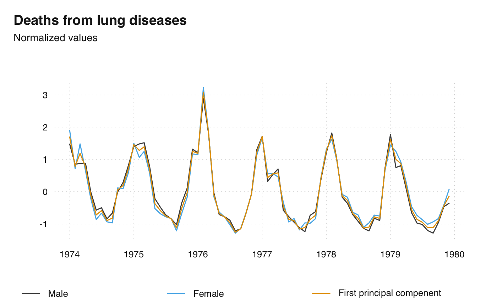
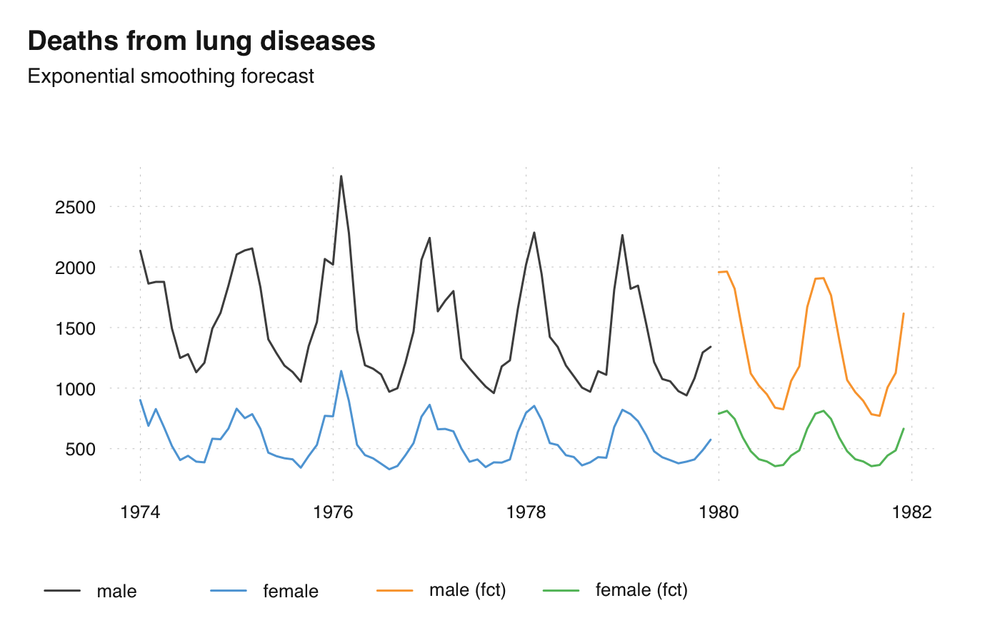
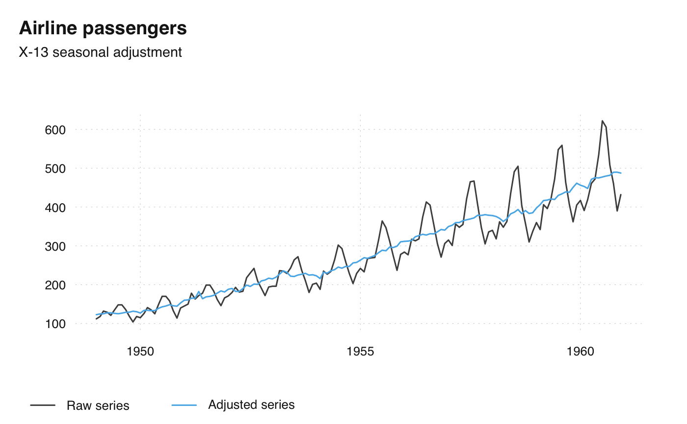

ts_examples.RdExample Functions, Generated by ts_. ts_prcomp calculates the principal
components of multiple time series, ts_dygraphs generates an interactive
graphical visualization, ts_forecast return an univariate forecast,
ts_seas the seasonally adjusted series.
ts_prcomp(x, ...) ts_dygraphs(x, ...) ts_forecast(x, ...) ts_seas(x, ...)
| x | ts-boxable time series, an object of class |
|---|---|
| ... | further arguments, passed to the underlying function. For help, consider these functions, e.g., stats::prcomp. |
Usually, a ts-boxable time series, with the same class as the input. ts_dygraphs draws a plot.
With the exception of ts_prcomp, these functions depend on external
packages.
ts_plot( ts_scale(ts_c( Male = mdeaths, Female = fdeaths, `First principal compenent` = -ts_prcomp(ts_c(mdeaths, fdeaths))[, 1] )), title = "Deaths from lung diseases", subtitle = "Normalized values" )ts_plot(ts_c( male = mdeaths, female = fdeaths, ts_forecast(ts_c(`male (fct)` = mdeaths, `female (fct)` = fdeaths))), title = "Deaths from lung diseases", subtitle = "Exponential smoothing forecast" )ts_plot( `Raw series` = AirPassengers, `Adjusted series` = ts_seas(AirPassengers), title = "Airline passengers", subtitle = "X-13 seasonal adjustment" )